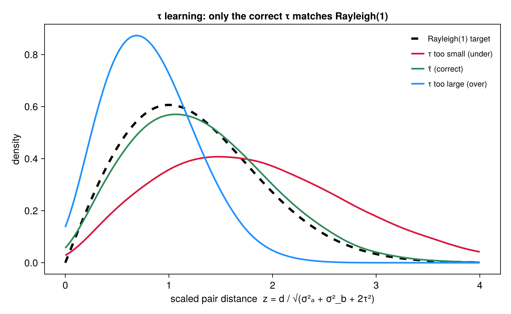
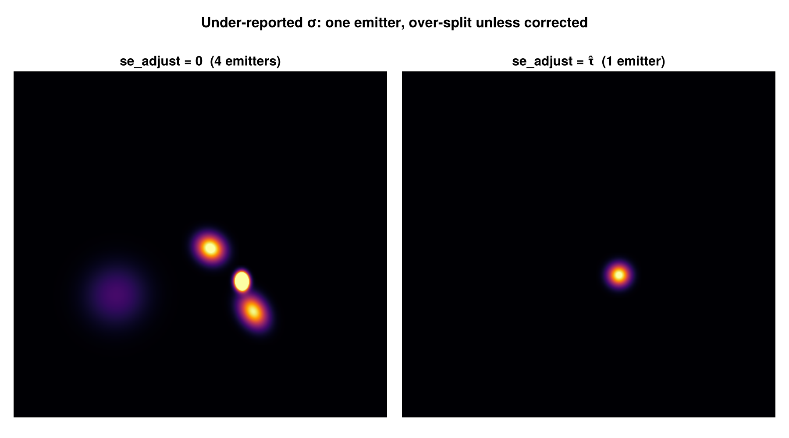

Uncertainty Correction
BaGoL's accuracy rests on the reported localization uncertainties $\sigma$ being correct. When they are underestimated by a common amount $\tau$, within-emitter localizations look too spread out for their error bars, and BaGoL over-splits — one true emitter becomes several. estimate_se_adjust recovers $\tau$ from the data and apply_se_adjust folds it in (se_estimate.jl).
The Rayleigh statistic
At the true $\tau$ and the correct grouping, the scaled separations of within-emitter localization pairs follow a Rayleigh(1) law. For a within-group pair with separation $d$,
\[z = \frac{d}{\sqrt{\sigma_a^2 + \sigma_b^2 + 2\tau^2}} \;\sim\; \mathrm{Rayleigh}(1), \qquad F(z) = 1 - e^{-z^2/2}.\]
The finder estimates $\tau$ by minimizing the Kolmogorov–Smirnov distance between the empirical CDF of the $z$ and this reference:
\[\hat{\tau} = \arg\min_{\tau}\ \max_i \left| \frac{i}{n} - \big(1 - e^{-z_{(i)}^2/2}\big) \right|.\]

The distribution of scaled within-emitter pair distances $z$ at three values of $\tau$: too small ($\tau = 0$, shifted right — localizations look over-spread), correct ($\hat\tau$, matching the Rayleigh(1) target), and too large (shifted left — over-merged). The estimator picks the $\tau$ whose empirical distribution best matches Rayleigh(1), via the Kolmogorov–Smirnov criterion above.
Over-merge descent
Grouping depends on $\tau$ and $\tau$ depends on the grouping, so the finder alternates an EM-style loop:
- E-step — regroup the data with a temporary BaGoL run at the current $\tau$ (using BaGoL's own Dahl-consensus labels);
- M-step — find the KS-minimizing $\tau$ on that frozen grouping (right-biased, to preserve same-emitter spread),
descending from above until $\tau$ is self-consistent. A spatial-block bootstrap provides a 95% confidence interval. The estimator is isotropic: it uses one per-localization uncertainty (the reported $\sigma_x$) and a single scalar $\tau$, so it is intended for data with roughly isotropic localization precision.
Applying the correction
apply_se_adjust inflates each localization's uncertainty in quadrature, per axis:
\[\sigma_x' = \sqrt{\sigma_x^2 + \tau_x^2}, \qquad \sigma_y' = \sqrt{\sigma_y^2 + \tau_y^2},\]
after which the corrected $\sigma'$ propagates into every precision $\Lambda_i$ of the collapsed representation. Set se_adjust=:auto to run the finder and apply its result, or pass a known number directly. The correction self-guards against double-applying: data already corrected upstream (metadata sigma_corrected = true) is skipped, and the finder refuses to run on already-corrected data.

A single emitter whose reported σ is underestimated. With se_adjust=0 BaGoL over-splits it into three spurious emitters (left); with the estimated $\hat\tau$ folded in it recovers the one true emitter (right) — the visible failure mode the correction removes.